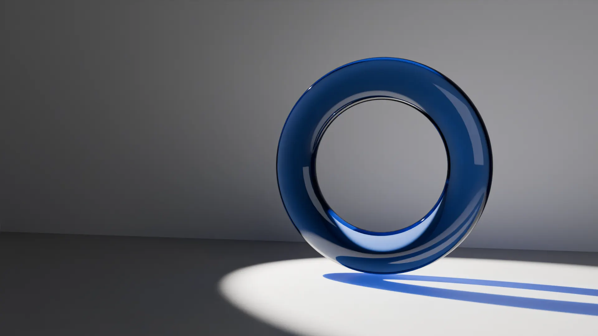
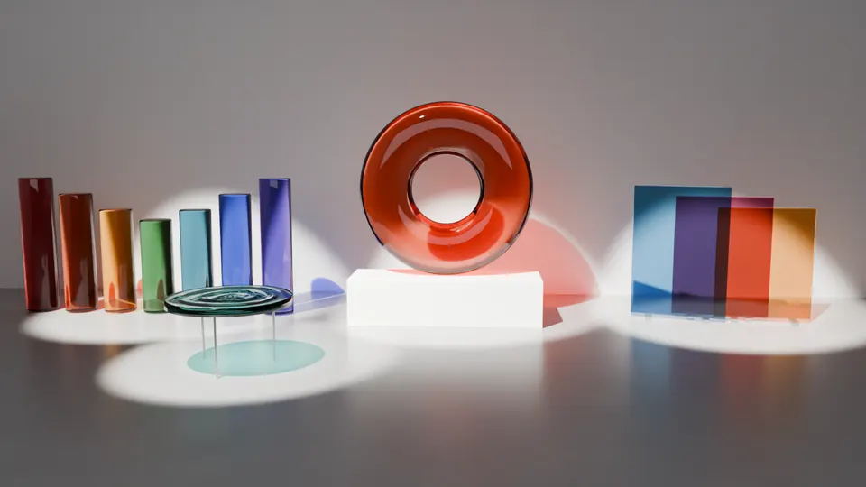

汐見 透Toru Shiomi
ガラスは光を止めない。少しだけ色を付け、遅らせ、曲げて、床に置く。
ガラスと光の彫刻家。1981年、石川県生まれ。
開催中の展覧会
光の目録 2008–2026
潮見市立美術館（岡山） 回顧展
2026年11月3日 – 2027年2月14日
2008年の作品番号001から2025年の030まで、30点すべてを番号の順に並べる初めての回顧展です。会場の照明は、作家が一点ずつ高さと向きを決めました。
展覧会の一覧
作家の言葉
作家についてガラスは光を止めない。少しだけ色を付け、遅らせ、曲げて、床に置く。私の作品は、ガラスそのものより、その向こうにできる影のほうだと思っている。
五つの連作

近作
光の色で見る30点
作品が床に落とす影の色を、赤から紫へ並べました。色を押すと、その作品のページが開きます。
- No. 027 夕凪（橙）
- No. 012 日食（琥珀）
- No. 023 琥珀の輪（琥珀）
- No. 003 夕方の柱（琥珀）
- No. 007 最初の輪（琥珀）
- No. 028 地平（黄）
- No. 008 灯台（黄）
- No. 020 影の地図（黄緑）
- No. 004 朝露（緑）
- No. 014 緑の部屋（緑）
- No. 029 光の深さ（青緑）
- No. 010 二重の輪（青緑）
- No. 021 静かな水面（青緑）
- No. 001 雨粒の重さ（水色）
- No. 013 三枚の窓（水色・赤紫・黄）
- No. 030 透明な時間（青）
- No. 002 十二の粒（青）
- No. 016 月の輪（淡い青）
- No. 005 青い柱（青）
- No. 022 潮の満ち引き（青）
- No. 026 青い柱 II（青）
- No. 019 軌道（藍）
- No. 009 欠けた輪（紫）
- No. 024 雨の後（紫）
- No. 025 重なる窓（赤紫）
- No. 015 夜明けの板（桃）
- No. 006 二本の柱（赤・水色）
- No. 017 七本の柱（七色）
- No. 018 赤い境界（赤）
- No. 011 塩の柱（無色に近い）